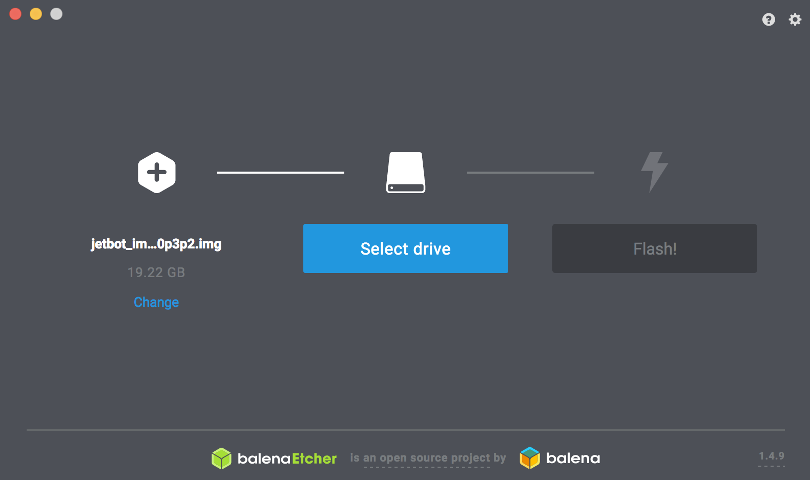

SDカードの作成
SDカードのイメージ
| SDカードの種類 | Download |
|---|---|
| Samsung 32 EVO Plusを使用の場合 | jetcard_v0p0p0.img |
jetcard_v0p0p0.img をダウンロードし、Etcherで焼き込みます。
NVIDIA-AI-IOTのJetracerのWikiのページが参考になります。
SDカードの焼き込み
SDカードのイメージは、Etcherを用いて、SDカードに焼き込む。





JetBotの起動
SDカードをJetson Nanoに差し込み起動する。
| 項目 | 内容 |
|---|---|
| ID | jetson |
| Pass | jetson |